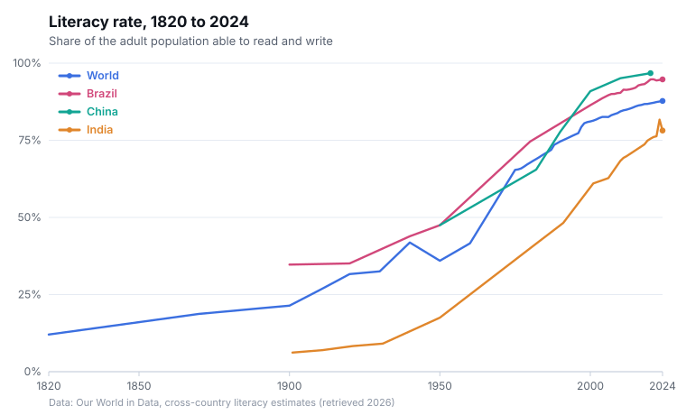

Week 2 · Weekly Project · Due July 26, 2026
Getting Started with Tableau
Why Tableau this week
Tableau is the tool we return to most often in this class, so it was a natural choice for the first weekly project. It is a data visualization platform that allows users to connect a spreadsheet or database and create charts by dragging fields onto a workspace rather than writing code. For example, placing one field on the Columns shelf and another on the Rows shelf prompts Tableau to generate a visualization automatically.
That accessibility is one of Tableau's main strengths. Instead of spending most of my time troubleshooting a plotting library, I can focus on interpreting the data and developing stronger questions. Since the purpose of the weekly project is to explore a humanities question rather than demonstrate technical programming skills, Tableau offers the right balance between ease of use and analytical flexibility.
I am using Tableau Public, the free version of the software. Its main limitation is that all visualizations are published online. For this project, however, that is useful because it allows me to embed an interactive chart directly into the class website.
The chart types we use in class
Over the term we build up the same core set of views in Tableau. Here's my running glossary of them, in roughly the order we learned them, and the kind of humanities question each one is good at answering.
-
Line charts
Track how a value changes over time. In humanities research, this usually means examining change across years or decades, such as publication counts, literacy rates, or word frequencies. These charts are especially useful when the main story is the overall trend.
-
Pie charts
Show how a whole is divided into parts at a specific moment. For example, they can illustrate what percentage of a collection is poetry rather than prose or how a corpus is distributed across different languages. They work best when there are only a few categories.
-
Scatter plots
Place two measurements on the x and y axes to identify possible relationships. A researcher might compare a text's length with its publication year, using one dot for each work. This makes correlations, patterns, and outliers easier to recognize.
-
Clusters
Allow Tableau to group points on a scatter plot into segments that display similar characteristics. This can reveal patterns that were not selected in advance, such as natural groupings among authors, artifacts, regions, or texts.
-
Dashboards
Combine several visualizations on one screen and allow them to interact. For example, clicking a section of a pie chart might filter the information shown in a line chart. Dashboards are useful when readers should be able to explore the data rather than simply view a fixed result.
-
Stories
Arrange dashboards and individual visualizations into an ordered sequence with captions. They provide a guided walkthrough of the analysis and help present an argument step by step, which closely reflects how humanities research often communicates findings.
What I like about that progression is that it mirrors how you'd actually reason about a humanities dataset: start by seeing the trend (line), break down the composition (pie), test for a relationship (scatter), let the data suggest groupings (clusters), then assemble it into something a reader can explore (dashboard) and follow (story).
The analysis
For the humanities component of this project, I am focusing on global literacy rates over time. The dataset tracks the percentage of people who can read and write across different countries over the past two centuries. This topic fits the assignment's broad definition of the humanities because literacy is a foundation for nearly every field within the discipline. The historical shift from literacy being limited to a small portion of the population to becoming common among the majority represents one of the most significant developments in human culture.
The data comes from Our World in Data and is both public and relatively clean, making it a practical first dataset for learning Tableau. It provides enough historical and geographic variation to support several forms of analysis without requiring extensive data preparation.
My plan is to develop the project using the chart types described above. I will begin with a line chart comparing literacy rates over time in several countries. I will then create a scatter plot showing literacy against year to examine the broader historical pattern. Clustering will help determine whether countries form natural groups based on earlier or later literacy development. Finally, I will combine these visualizations in a small dashboard and story that presents the findings as a connected argument. The completed interactive version will be embedded here once the Tableau workbook is finished.

First reflections on the tool
Even before completing the analysis, several things about Tableau stand out. Its drag and drop interface makes it easy to test a question quickly and abandon it if the results are not useful, which encourages experimentation. At the same time, the tool can conceal important limitations. Tableau can make a visualization appear polished and authoritative as soon as fields are added, even when the dataset is limited or the comparison is misleading. For humanities research, this is an important issue to keep in mind. A clean chart is still making an argument, and the software will not identify a weak argument on its own. The tension between Tableau's ease of use and the level of critical judgment it still requires is something I want to continue examining throughout the rest of these weekly projects.